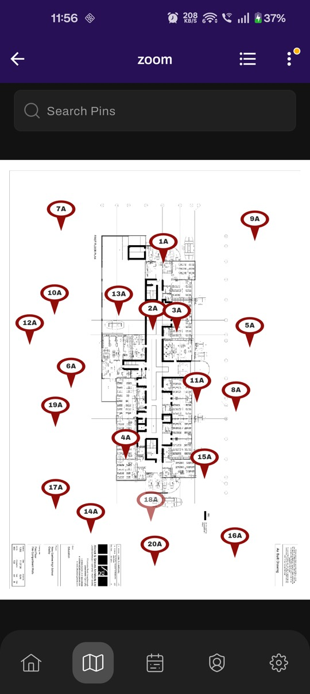
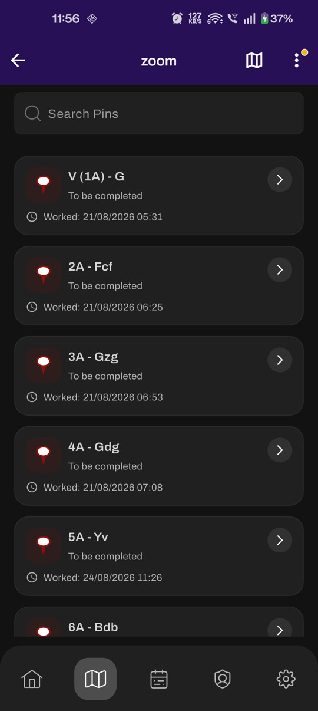
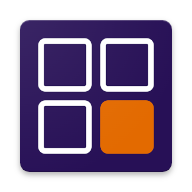
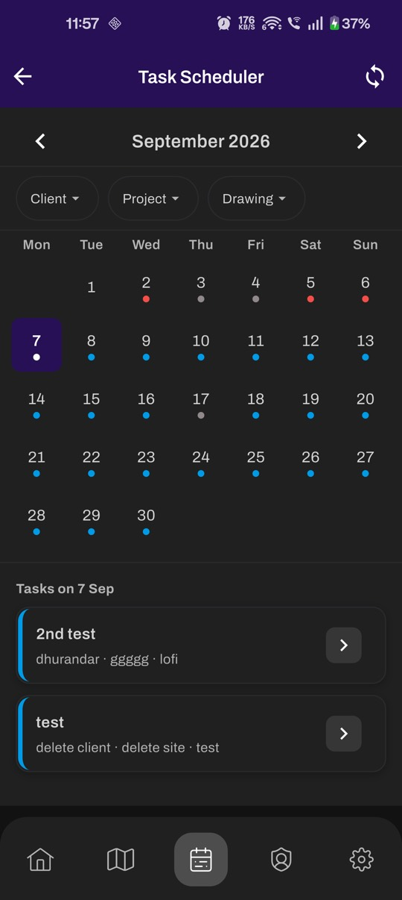
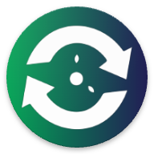
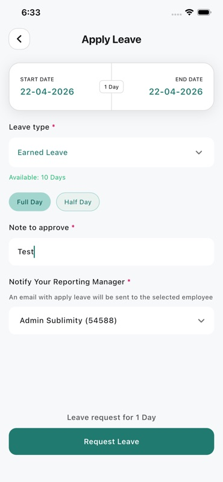
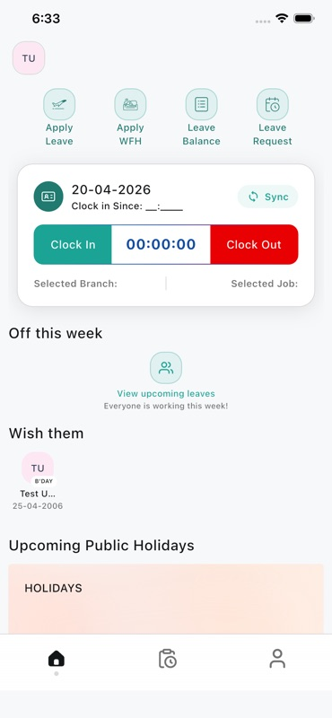
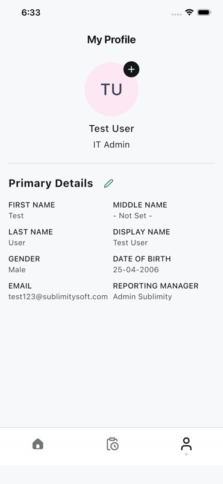

{ No signal }
Still saving.
Every inspection is written to the phone first. The network can wait.
No signal saved on device
Rahul Gupta · syncing
4 held on device · waiting for signal
Rahul Gupta · Mobile Lead · Jaipur, India
Four years of Flutter for people who work in basements, plant rooms and warehouses.
{ No signal }
Every inspection is written to the phone first. The network can wait.
No signal saved on device
{ Signal back }
When the signal returns, a background job sends what was waiting and settles any conflicts.
Signal back sending{ Force-quit }
Kill the app. Restart the phone. The queue is still there.
Synced nothing lost
Same work, five interfaces. Studio is the quickest read. RahulOS is the one to open on a phone.
12345 to open · hover to run it live
Home screen · sliding screens · four themes
Phones are what I build, so this version is one. Each project opens like an app.
Open RahulOS↗ 02 · StudioStart hereBig type · draggable gallery
Every project, with real screens from the shipped app in a gallery you drag.
Open Studio↗ MOBILEAmber CRT · real prompt
Type help, work or sync. Tab completes. Try sudo hire rahul.
Riso · paper stock
Overprinted colour and oversized type. Rows flood with ink as you pass them.
Open Field Notes↗ FIELDHairlines · title block
A building with inspection pins, a geofenced site, and a drop-off chart.
Open Drawing 001↗{ FireArrest }
10
Still in service, on the App Store and Google Play.

FireArrest · fire-safety inspectionsInspectors lose signal in plant rooms. A lost inspection means a second site visit. I built the offline database and the sync engine behind it.

Shipped build · real screens
ClockedIn · attendance and timeShifts start on sites and in warehouses, not at desks. Every clock-in is checked three ways. PIN. Geofence. Biometrics.
HRM OTM · HR, leave and attendance
Face matching and an anti-spoof check both run on the handset. If the framing is off, the app coaches the person instead of failing them.



Shipped build · real screens{ Live today }
8
{ How I build }
I design the local database first. The network is a background job that expects to fail.
Compliance and payroll get argued about later. Each edit records who made it, and when.
A mid-range Android in a basement, not a flagship on wifi. Photos shrink before upload.
Gemini drafts test cases and docs for the team. A plain form stays a plain form.
{ On device }
{ Also built }
A CRM for a business that sells over WhatsApp. Every lead keeps the source it first came from.
Phase 1 built · not releasedNext.js · React · PostgresAPI monitoring for the team, with a Gemini assistant that drafts test cases and docs.
Internal toolGemini API · PythonLive lectures and mock tests for JEE and NEET students on cheap phones and patchy home wifi.
Pulled from Play for a rebrandFlutter · Firebase · RazorpayNow · Sep 2026. Shipping a major release of a field-inspection app and mentoring the Flutter team.